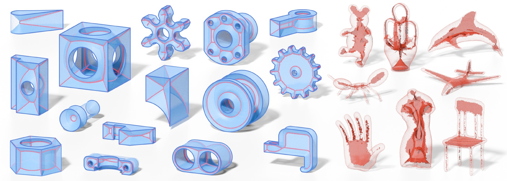

DC-SQEM: Medial Mesh Extraction by Dual Contouring with Spherical Quadric Error Metric
ACM Transactions on Graphics
1School of Informatics, Xiamen University 2School of Film, Xiamen University 3Department of Computer Science, The University of Texas at Dallas
Abstract
The medial axis, as a compact representation, describes not only the boundary but also the interior of the shape, and has been widely used in analyzing and simplifying shapes. However, approximating feature-preserving medial axis from unstructured data, such as oriented point clouds, remains challenging due to the lack of explicit connectivity and the presence of noise in the source. We propose DC-SQEM, a dual-contouring-based framework that computes medial meshes (an explicit representation of the medial axis) directly from oriented point clouds without relying on watertight manifold surfaces or volumetric structures. With the help of an adaptive octree, our method fits local medial spheres for each cell based on the Spherical Quadric Error Metric (SQEM). We address several long-standing robustness issues in dual-contouring and mesh extraction, including out-of-cell solutions, unstable feature classification, and redundant topological connections. To this end, we introduce virtual nodes, a feature-downgrading strategy, and a geometry-driven topology-aware cleanup procedure, enabling robust SQEM-based medial dual contouring with clean mesh outputs. Unlike prior point-cloud-based methods that produce either only 1D skeletal structures or incomplete medial features, our method preserves sharp geometric features from the input and reconstructs a complete medial structure, including sheets, curves, seams, and junctions. Compared to restricted-power-diagram-based approaches, our algorithm can handle point clouds as input, without having a strong requirement on water-tightness or manifoldness.
Results

On the 93-model CAD benchmark, DC-SQEM generates a medial mesh for all 93 inputs, with an average topology error rate of 2.1505% and an average Hausdorff distance of 0.4203%. These results concern the clean, sufficiently dense point clouds evaluated in the paper.
BibTeX
If you find this work useful, please cite our paper. The entry will be updated when the final journal record is available.
@article{li2026dcsqem,
title = {DC-SQEM: Medial Mesh Extraction by Dual Contouring
with Spherical Quadric Error Metric},
author = {Bingchuan Li and Ruilong Liu and Tianhao Hu and
Congyi Zhang and Ningna Wang and Junfeng Yao and
Xiaohu Guo},
journal = {ACM Transactions on Graphics},
year = {2026},
eprint = {2611.07328},
archivePrefix = {arXiv},
primaryClass = {cs.GR},
url = {https://arxiv.org/abs/2611.07328},
note = {Accepted for publication}
}